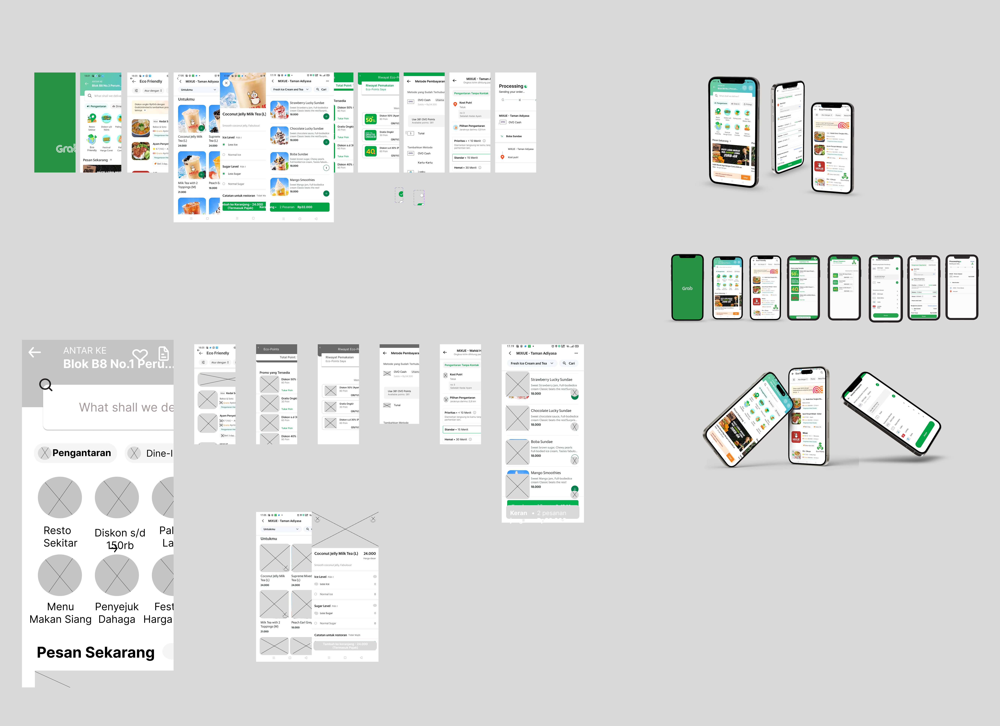
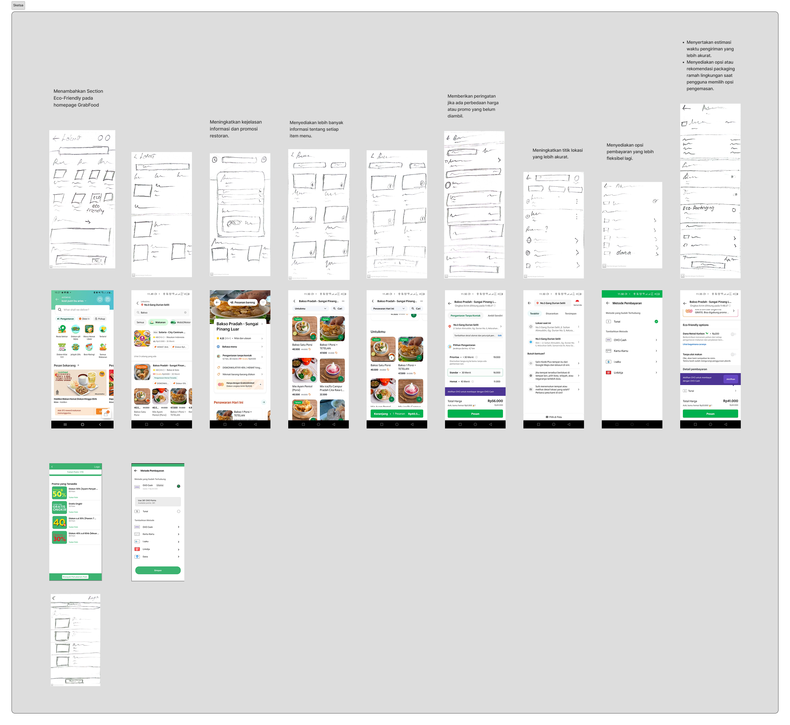

Karya Terpilih
Redesign Aplikasi GoFood - Eco-Friendly Section
Proyek UI/UX hasil program MSIB GreatEdu yang berfokus pada fitur ramah lingkungan.


Pengalaman
Kepanitian Welcoming Party Informatics (2022)
Panitia Divisi Pendamping Kelas
- Mengelola dan mendampingi kelompok mahasiswa baru untuk mempercepat adaptasi dengan lingkungan program studi teknik informatika.
- Memfasilitasi diskusi interaktif yang berhasil meningkatkan kekompakan dan pemahaman mahasiswa terhadap kurikulum serta prospek karir di bidang IT.
Magang dan Studi Independen Bersertifikat (MSIB) Kampus Merdeka (2023)
Peserta Aktif - SIB Cycle 5 GreatEdu - UI/UX Bootcamp
- Mempelajari dan menerapkan metodologi desain UI/UX, mulai dari user research, wireframing, hingga prototyping menggunakan Figma.
- Berkontribusi dalam tim untuk melakukan redesign aplikasi GoFood dengan merancang fitur “Eco-Friendly Section” yang berfokus pada penyediaan merchant dengan kemasan ramah lingkungan.
- Merancang antarmuka (UI) dan alur pengguna (user flow) untuk sistem poin khusus yang dapat ditukarkan dengan rewards seperti cashback dan voucher untuk meningkatkan user retention.
Keahlian
UI/UX dan Multimedia: Figma, Adobe Photoshop, Canva, Capcut.
Software & Tools: Microsoft Office (Word, PowerPoint, Excel).
Pemrograman Dasar: PHP, JavaScript, C++, HTML/CSS
Soft Skills: Kreativitas, Komunikasi Efektif, Kerja Sama Tim, Kemampuan Analitis.